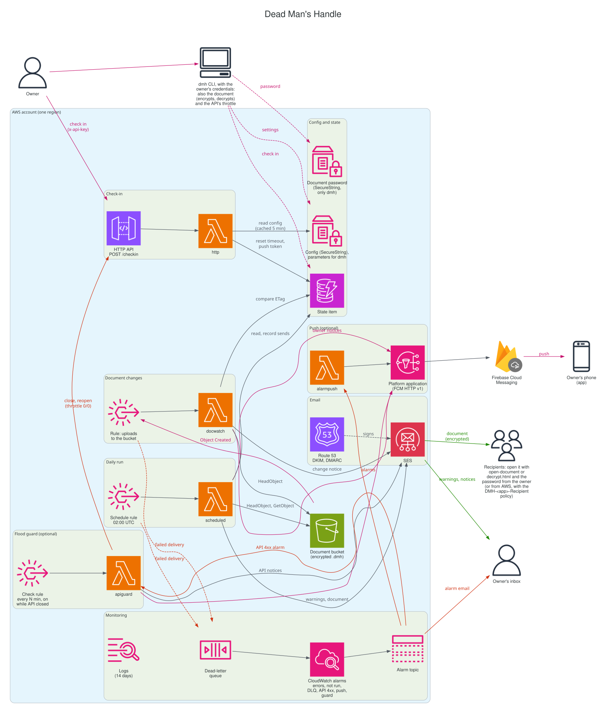

Dead Man's Handle architecture
The AWS resources, the flows between them, and what reaches the owner and the recipients.
- The owner's actions, uploads and push
- Alarms and the flood guard
- Within AWS
- The CLI working on AWS directly, DKIM signing, failed deliveries
